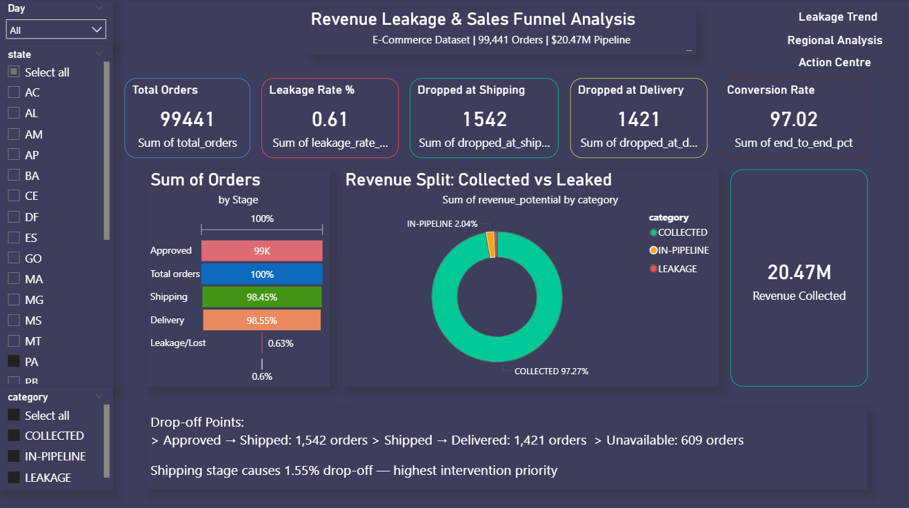
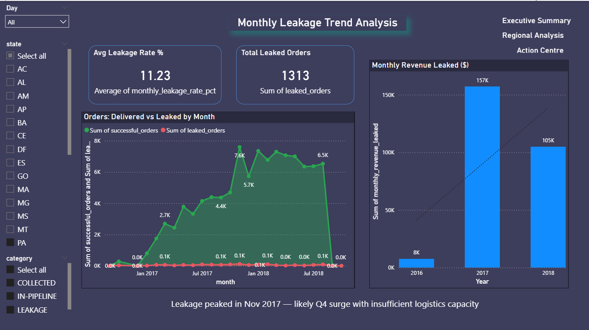
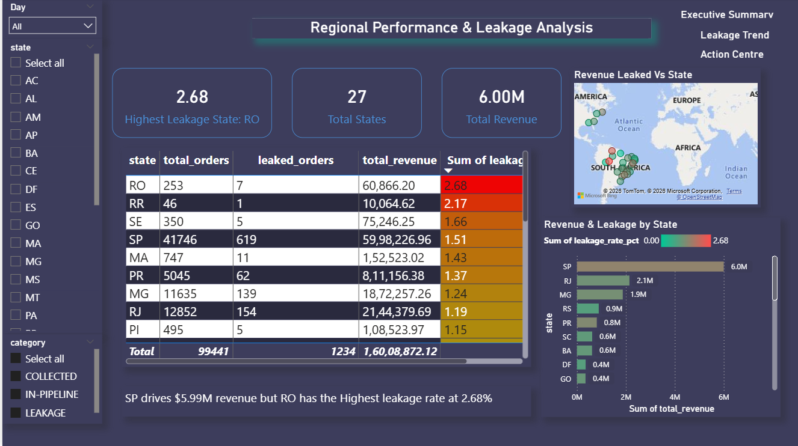
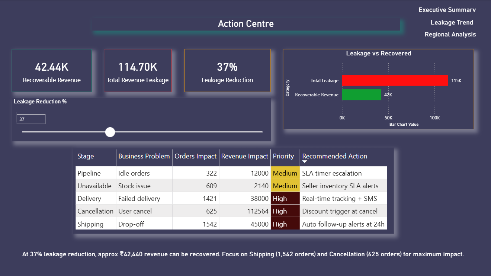

End-to-end sales funnel and revenue leakage analysis using PostgreSQL, SQL, Power BI, and What-If revenue recovery simulations to identify operational inefficiencies and recover lost revenue.
Total e-commerce sales pipeline analyzed across 99,441 orders.
Total revenue leakage identified from cancelled and unavailable orders.
End-to-end sales funnel conversion rate achieved.
Estimated immediately recoverable revenue via operational improvements.
End-to-end workflow used to diagnose sales funnel leakage, quantify lost revenue, and simulate recovery strategies.
Analysis uncovered operational bottlenecks, revenue leakage patterns, and high-impact recovery opportunities.
Orders dropped between approval and shipping stage.
SLA breached deliveries identified with average delay of 8.9 days.
Highest leakage state with 2.68% revenue leakage rate.
Overall on-time delivery rate across delivered orders.
Interactive 4-page executive dashboard designed for leakage analysis, funnel diagnostics, and recovery simulations.

Pipeline KPIs, leakage metrics, sales funnel performance, and drop-off analysis.

Monthly delivered vs leaked revenue analysis from Sep 2016 to Oct 2018.

27-state leakage analysis with revenue comparison and conditional formatting.

Interactive What-If recovery simulation with operational recommendations.
Built an interactive What-If simulation using DAX parameters to estimate recoverable revenue through operational improvements and retention actions.
Recovery simulation target applied using DAX What-If parameters.
Estimated recovery potential through shipping-stage operational alerts.
Estimated recovery from targeted cancellation intervention campaigns.
Total immediately recoverable revenue estimated using combined strategy.
Operational recommendations designed to reduce leakage, improve fulfillment performance, and increase revenue recovery.
Problem: 1,542 orders dropped before shipping stage causing significant leakage.
Strategy: Automated 24-hour seller escalation alerts for delayed shipping confirmation.
Recovery Potential: Estimated $3,241 immediately recoverable revenue.
Problem: Cancelled orders contributed over $112K in leakage.
Strategy: Trigger discount offers and recovery outreach before order cancellation completion.
Recovery Potential: Estimated $2,161 recoverable through intervention offers.
Problem: 1,421 orders dropped between shipping and delivery stages.
Strategy: Real-time delivery tracking with automated SMS notifications and SLA monitoring.
Expected Impact: Reduced failed deliveries and improved customer satisfaction.
Problem: Unavailable inventory contributed directly to leakage events.
Strategy: Introduce seller inventory SLA alerts and proactive stock monitoring.
Expected Impact: Reduction in unavailable order cancellations and fulfillment failures.
Combined operational improvements targeting shipping leakage and cancellation recovery could immediately recover approximately $5,401 in lost revenue.